Szlakiem
latarni
morskich
na rowerze
USTKA -HEL

220km
DYSTANS
3 dni
CZAS

Latarnia w Ustce wybudowana została u ujścia rzeki Słupi w 1892 roku, a nietypowa, ośmiokątna wieża, figuruje na nadmorskich widokówkach już od 100 lat.

Z Ustki w pierwszej kolejności kierujemy się do Rowów przez małe wioski, zarośnięte pola i lasy, głownie drogi polne, płyty betonowe. Rowy to klimatyczna, letniskowa wieś z małą przystanią rybacką. Przebiega tu zachodnia granica Słowińskiego Parku Narodowego, który w 1977 roku został uznany przez UNESCO jako Światowy Rezerwat Biosfery (wstęp 6 zł). Osobliwością krajobrazu SPN są ruchome wydmy.

Latarnię w Czołpinie widać już z daleka, podczas jazdy leśną dróżką, a z góry roztacza się doskonały widok na wydmy Słowińskiego Parku Narodowego. Otwarta została w 1875 roku i mierzy 25 metrów.
Z Ustki w pierwszej kolejności kierujemy się do Rowów przez małe wioski, zarośnięte pola i lasy, głownie drogi polne, płyty betonowe. Rowy to klimatyczna, letniskowa wieś z małą przystanią rybacką. Przebiega tu zachodnia granica Słowińskiego Parku Narodowego, który w 1977 roku został uznany przez UNESCO jako Światowy Rezerwat Biosfery (wstęp 6 zł). Osobliwością krajobrazu SPN są ruchome wydmy.

Latarnię Stilo oddano została do użytku na początku XX wieku. Pod względem wyglądu wyróżnia się wśród polskich latarni. Po pierwsze, jest jedną z dwóch latarni wybudowanych ze stali. Ma przekrój szesnastokąta i jest pomalowana w charakterystyczne czarno-biało-czerwone barwy
Z Ustki w pierwszej kolejności kierujemy się do Rowów przez małe wioski, zarośnięte pola i lasy, głownie drogi polne, płyty betonowe. Rowy to klimatyczna, letniskowa wieś z małą przystanią rybacką. Przebiega tu zachodnia granica Słowińskiego Parku Narodowego, który w 1977 roku został uznany przez UNESCO jako Światowy Rezerwat Biosfery (wstęp 6 zł). Osobliwością krajobrazu SPN są ruchome wydmy.


Latarnia w Rozewie jest najstarszą na na polskim wybrzeżu. Ma murowaną podstawę, ale górę wykonano z metalu. Poza widokami z góry, latarnia skrywa małe muzeum poświęcone historii latarnictwa.
Od Władysławowa do Helu ciągnie się porządna ścieżka rowerowa. W wielu miejscach widoki na morze i zatokę są po prostu wspaniałe. Za Chałupami ten 35 km półwysep ma tylko niecałe 200 m szerokości – widać z jednej strony morze a z drugiej zatokę! Warto zatrzymać się na chwilę czy to przy Zatoce Puckiej (części Zatoki Gdańskiej, położonej między Mierzeją Helską a linią Hel-Gdynia), pooglądać windsurferów czy kitesurferów czy odpocząć na kameralnej plaży. Na trasie odwiedzamy kolejno Chałupy, Kuźnicę

Latarnia usytuowana na Mierzei Helskiej. Wybudowana w 1950 latarnia w Jastarni jest najmniejszą z polskich latarni - ma zaledwie 13,5m! Jest jedną z dwóch, obok Stilo, w całości wykonanych metalu. Niestety nie udostępniono ją do zwiedzania.
Po drodze na Hel warto zatrzymać się w uroczej Juracie. Po znaku drogowym Hel zostaje jeszcze 8 km jazdy drogą leśną przy drodze. Miejscowość sama w sobie jest bardzo ładna i charakterystyczna. Są tu m.in. ładne plaże, fokarium, fortyfikacje, wiele punktów militarnych, tradycyjna zabudowa rybacka (ul. Wiejska), Muzeum Rybołówstwa w gotyckim kościele oraz spory port rybacki.


Obecna latarnia wybudowana została w 1942 roku przez Niemców, gdyż wcześniejsza, wzniesiona w XIX wieku, została wysadzona przez polskich saperów we wrześniu 1939, aby utrudnić ostrzał niemieckiej artylerii.
Z Helu, w podróż powrotną możesz wybrać się komfortowo pociągiem, który w sezonie letnim kursuje bardzo często i dojeżdża bezpośrednio nawet na drugi koniec Polski.